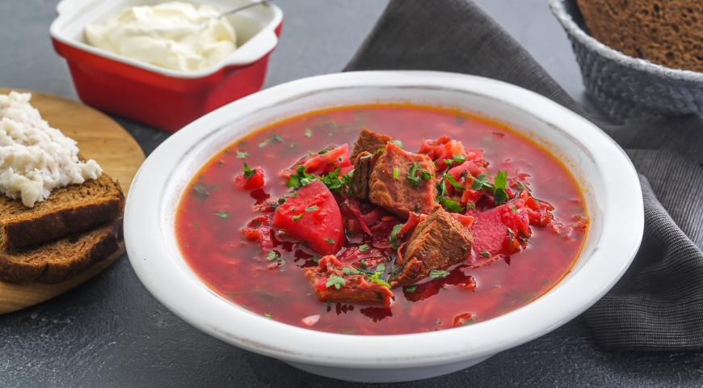

Recipe of borsch

Description
Here's a recipe of ukrainian borsch. A dish that is beloved in Ukraine, where I am originally from.
This particular recipe is fairly simple to cook with step-by-step. I remember my first experience with making borsch with no clear recipe...Oh gosh, it was way more challenging yet rewarding. Since after all, I got a solid result as well. So I hope your borsch will turn out to be the most delicious thing you have ever cooked. Good luck!
Ingredients
- 1 package pork sausage
- 3 medium beets, peeled and shredded
- 3 carrots
- 3 baking potatoes
- 1/2 medium head cabbage
- 1 cup diced tomatoes
- 1 tablespoon vegetable oil
- 1 medium onion
- 1 can tomato paste
- 8 3/4 cups water
- 3 cloves garlic
- 1 teaspoon white sugar
- salt and pepper
- 1/2 cup sour cream
- 1 tablespoon chopped fresh parsley for garnish
Steps
- Crumble sausage into a skillet set over medium-high heat. Cook and stir until no longer pink. Remove from the heat and set aside.
- Fill a large pot halfway with water (about 8 cups) and bring to a boil.
- Add sausage to pot, cover pot, and return to a boil. Add beets and cook until they have lost their color. Add carrots and potatoes and simmer until tender, about 15 minutes.
- Add cabbage and diced tomatoes to pot.
- Heat oil in a skillet over medium heat. Add onion and cook until tender. Stir in tomato paste and remaining 3/4 cup water until well blended. Transfer to the pot.
- Add garlic to the soup, cover, and turn off the heat. Let stand 5 minutes. Stir in sugar and season with salt and pepper.
- Ladle into serving bowls. Garnish with sour cream and parsley.